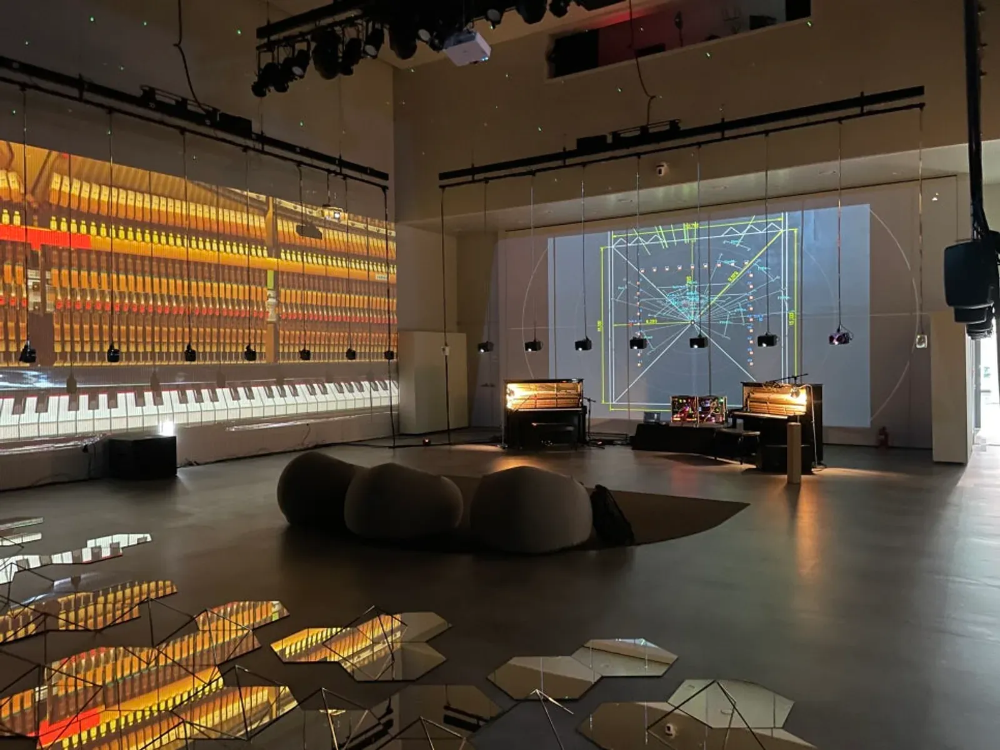
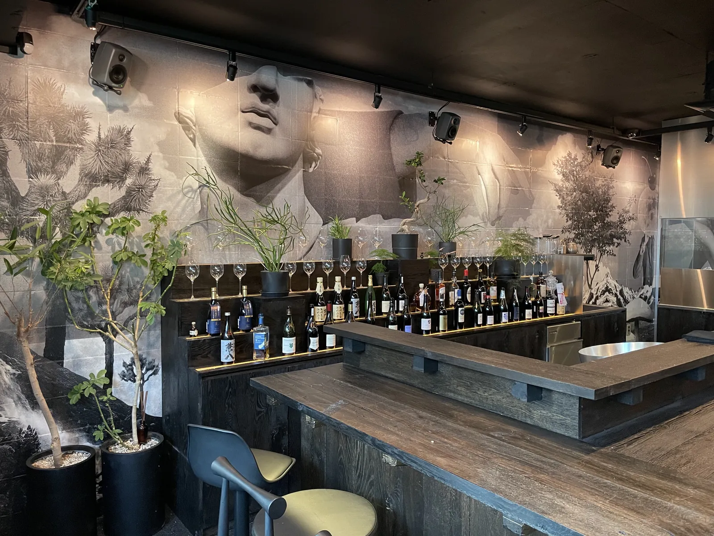
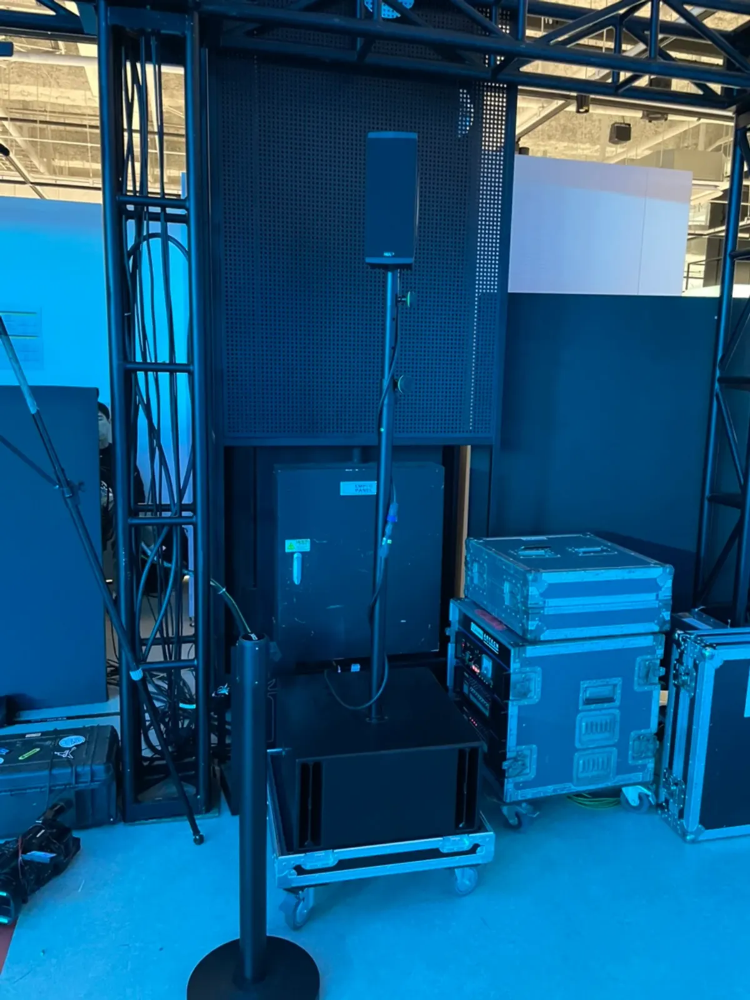

서울 입체음향 전시는 장비 목록보다 「스피커를 매달 자리와 테스트할 시간」이 먼저 정해져야 합니다. 스피커 수십 대가 소리를 나눠 내고 영상이 그 움직임을 따라가야 해서, 설치보다 조정에 시간이 더 듭니다. 제이식스미디어가 강신욱 작가 음악 전시 「꿈의 해석」을 서울 삼성역 근처 C스퀘어에서 준비한 과정을 바탕으로, 전시 음향을 맡길 때 미리 정할 것을 정리했습니다.

- 입체음향 전시는 스피커를 어디에 매달고 세울 수 있는지(천장 바턴 · 벽 · 바닥)를 공간 담당자와 먼저 확인합니다.
- 소리와 영상이 같은 움직임을 보여 주려면, 음향과 영상을 한 팀이 함께 맞추는 것이 수월합니다.
- 설치 기간이 짧으면 테스트와 조정 시간이 줄어듭니다. 개막 전날까지 소리를 다듬을 시간을 일정에 넣어 둡니다.
- 작품 길이(곡 수 · 반복 주기)와 관람 동선을 미리 알려 주면 스피커 배치를 맞추기 쉽습니다.
1. 서울 입체음향 전시, 무엇이 다른가
일반 행사 음향은 앞쪽 스피커 몇 대로 객석에 소리를 고르게 보내는 것이 목표입니다. 입체음향 전시는 다릅니다. 관람객 주변 곳곳에 스피커를 두고, 소리가 이쪽에서 저쪽으로 움직이거나 위에서 내려오는 것처럼 들리게 합니다. 작가가 의도한 소리의 위치를 공간에 그대로 옮기는 일이라, 스피커 한 대 한 대의 자리와 각도가 작품의 일부가 됩니다.
| 구분 | 일반 행사 음향 | 입체음향 전시 |
|---|---|---|
| 스피커 | 앞쪽 몇 대 | 공간 곳곳에 여러 대 |
| 목표 | 객석에 고르게 | 소리의 위치 · 움직임을 들려주기 |
| 영상 | 자막 · 화면 송출 | 소리와 같은 움직임을 보여 줌 |
| 시간 | 리허설 한두 번 | 설치 뒤 테스트와 조정이 길다 |
2. 「꿈의 해석」 전시는 이렇게 구성했습니다
강신욱 작가 음악 전시 「꿈의 해석」은 컬처랜드 타워 C스퀘어에서 열렸습니다. 야마하 자동 연주 피아노 2대와 작가의 아날로그 신디사이저에, 공연장 조명바턴을 이용해 Genelec 8010 스피커 27대와 Neumann KH120 스피커를 설치했습니다. 바닥에는 18인치 서브우퍼 2대를 놓았습니다.
프로젝터 3대로 정면에는 스팟의 움직임을, 좌우 화면에는 각 피아노의 움직임에 맞춘 영상을 보여 줍니다. 모두 9곡, 40분 동안 이어지는 전시입니다. 전체 기록은 「꿈의 해석」 전시 이야기에 사진과 함께 있습니다.

3. 스피커를 매달 자리부터 확인합니다
입체음향 전시의 첫 질문은 「스피커를 어디에 걸 수 있는가」입니다. 「꿈의 해석」은 공연장 조명바턴(천장에 매달린 봉)을 이용해 스피커를 매달았습니다. 바턴이 없는 전시장이라면 벽에 달 수 있는지, 스탠드를 세워도 동선에 방해가 안 되는지 따져야 합니다.
- 천장에 스피커를 매달 수 있는 구조(바턴 · 레일)가 있는지, 무게를 견디는지
- 벽에 고정하는 것이 허용되는지(전시가 끝난 뒤 원상 복구 조건)
- 바닥에 서브우퍼와 장비를 둘 자리, 관람객이 밟지 않게 선을 숨길 길
- 스피커 선과 전원을 끌어올 위치
- 관람객 동선 — 어디서 들어와 어디에 머무는지
4. 영상과 소리는 한 팀이 맞춥니다
「꿈의 해석」에서는 음향과 영상을 함께 셋팅했습니다. 피아노가 연주되는 순간 그 피아노 쪽 화면이 움직이고, 소리도 그쪽에서 들려야 작품이 됩니다. 음향과 영상을 서로 다른 팀이 맡으면 시점을 맞추는 데 시간이 더 걸립니다. 제이식스미디어 하는 일 페이지에도 적어 두었듯, 스피커 수십 대를 배치하고 영상과 맞물리게 조정하는 작업을 함께합니다.
- 작품 음원과 영상 파일을 최종본으로 미리 받습니다.
- 스피커마다 어떤 소리가 나가는지 작가와 함께 하나씩 확인합니다.
- 영상 화면의 움직임과 소리의 위치가 맞는지 관람 자리에서 봅니다.
- 작품 한 바퀴(전체 길이)를 처음부터 끝까지 틀어 놓고 이어지는 부분을 점검합니다.

5. 설치 · 테스트 기간을 넉넉히 잡습니다
「꿈의 해석」은 설치 기간이 짧아 전시 전날 늦게까지 테스트하고 조정했습니다. 입체음향은 장비를 다 단 뒤부터가 진짜 작업입니다. 전시 일정을 잡을 때 설치 기간과 별도로 테스트 · 조정 기간을 넣어 두면, 개막 직전에 서두르지 않아도 됩니다.
| 단계 | 할 일 | 누가 확인하나 |
|---|---|---|
| 사전 협의 | 공간 도면 · 매달 자리 · 작품 길이 | 작가 · 기획자 · 공간 담당 |
| 설치 | 스피커 · 서브우퍼 · 프로젝터 설치와 배선 | 음향 · 영상 팀 |
| 테스트 | 스피커별 소리 확인, 영상과 시점 맞추기 | 작가와 함께 |
| 조정 | 관람 자리에서 듣고 음량 · 위치 다듬기 | 작가와 함께 |
| 운영 | 매일 켜고 끄는 순서, 문제 생길 때 연락처 | 전시장 운영자 |
6. 서울 입체음향 전시 견적 문의 전에 정리할 것
남양주 별내 사무실에서 서울시청까지 차로 약 25분 · 19.9km(막히지 않을 때 기준)입니다. 자동 견적서에서 「전시 · 공연 입체음향」이나 「입체음향 · 스튜디오」를 골라 보내 주시면 확인 후 안내합니다. 견적서에는 단가가 「협의」로 나오고, 확인 뒤 확정 견적을 보냅니다.
| 자동 견적서 항목 | 언제 고르나 |
|---|---|
| 전시 · 공연 입체음향 | 이머시브 사운드 전시 · 콘서트 · 패션쇼 음향을 맡길 때 |
| 입체음향 · 스튜디오 | 입체음향을 공간에 오래 두는 설치일 때 |
| 프로젝터 · 스크린 | 작품 영상을 함께 띄울 때 |
| 음향 엔지니어 | 설치 뒤 테스트 · 조정을 함께할 때 |
알려 주시면 좋은 것은 전시 기간과 설치 가능한 날짜, 공간 도면이나 사진, 작품 길이와 채널 수, 영상 유무입니다. 지역 안내는 서울 음향 · 설치 안내에 있습니다.
자주 묻는 질문
스피커를 몇 대 써야 하나요?
작품이 소리를 몇 군데로 나누어 내는지와 공간 크기에 따라 다릅니다. 「꿈의 해석」은 Genelec 8010 27대와 Neumann KH120, 서브우퍼 2대를 썼지만 작품마다 구성이 달라집니다.
영상 장비도 함께 맡길 수 있나요?
「꿈의 해석」에서는 프로젝터 3대로 영상을 띄우며 음향 · 영상을 함께 셋팅했습니다. 자동 견적서의 「프로젝터 · 스크린」 항목을 함께 골라 보내 주세요.
설치는 며칠 전에 시작해야 하나요?
공간 조건과 작품 길이에 따라 다릅니다. 장비 설치 뒤 테스트 · 조정 시간이 따로 필요하니, 개막일과 공간을 쓸 수 있는 날짜를 함께 알려 주세요.